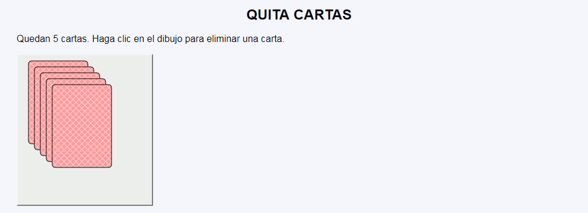
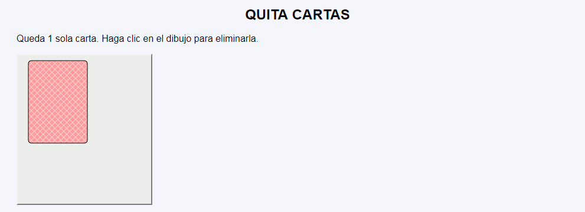
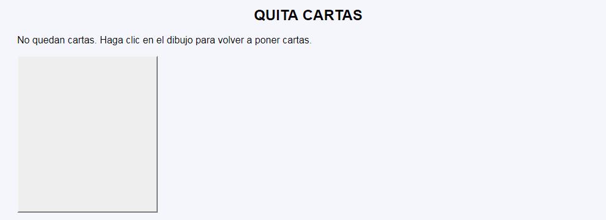

Quita cartas - Ejemplo de programa
Nota: El día del examen los alumnos no tienen acceso a este ejemplo, solamente tienen acceso a las capturas del apartado anterior.
Un ejemplo de programa puede probarse en la ventana siguiente:
En este ejercicio se debe crear un programa que muestre un montón de cartas boca abajo y permita ir retirándolas una a una, en un ciclo sin fin.



<p>Quedan 3 cartas. Haga clic en el dibujo para eliminar una carta.</p>
<form action="quita-cartas-2.php">
<p>
<button type="submit" name="quita" value="quita" style="background-color: #eee;">
<svg version="1.1" xmlns="http://www.w3.org/2000/svg"
width="210" height="250" viewBox="-10 -10 210 250">
<defs>
<pattern id="patron-1" x="0" y="0" width="10" height="10" patternUnits="userSpaceOnUse" >
<rect x="0" y="0" width="10" height="10" fill="hsl(0, 100%, 80%)" />
<line x1="0" y1="10" x2="10" y2="0" stroke="hsl(0, 100%, 90%)" stroke-width="1" />
<line x1="0" y1="0" x2="10" y2="10" stroke="hsl(0, 100%, 90%)" stroke-width="1" />
</pattern>
</defs>
<rect x="0" y="0" width="100" height="140" rx="5" ry="5" style="stroke: black; fill: url(#patron-1);" />
<rect x="10" y="10" width="100" height="140" rx="5" ry="5" style="stroke: black; fill: url(#patron-1);" />
<rect x="20" y="20" width="100" height="140" rx="5" ry="5" style="stroke: black; fill: url(#patron-1);" /> </svg>
</button>
</p>
</form>
Nota: El día del examen los alumnos no tienen acceso a este ejemplo, solamente tienen acceso a las capturas del apartado anterior.
Un ejemplo de programa puede probarse en la ventana siguiente: